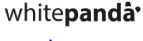

<mat-sidenav-container class="sidenav-container">
  <mat-sidenav #drawer class="sidenav" fixedInViewport="true"
      [attr.role]="(isHandset$ | async) ? 'dialog' : 'navigation'"
      [mode]="(isHandset$ | async) ? 'over' : 'side'"
      [opened]="!(isHandset$ | async)">

    <mat-nav-list>
      <br><br><br>
      
      <br>
      
      <br>
      
      
    </mat-nav-list>

  </mat-sidenav>
  <mat-sidenav-content>
    <mat-toolbar>
      <button
        type="button"
        aria-label="Toggle sidenav"
        mat-icon-button
        (click)="drawer.toggle()"
        *ngIf="isHandset$ | async">
        <mat-icon aria-label="Side nav toggle icon">menu</mat-icon>
      </button>

      
      <div id="icons">
        <a id="bell" href="#" class="fa fa-bell"><span class="badge">699</span></a>
        <a mat-card-avatar class="header-image">AB</a>
      </div>


    </mat-toolbar>
    <!-- Add Content Here -->
      <app-content></app-content>
  </mat-sidenav-content>
</mat-sidenav-container>
